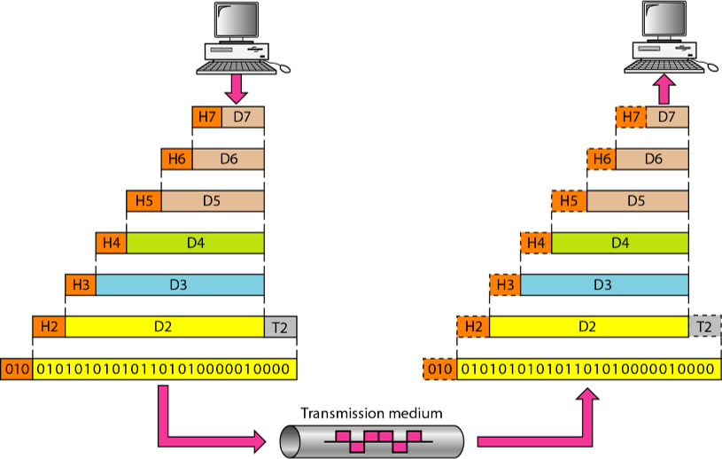
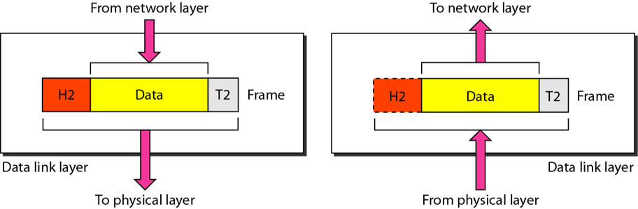
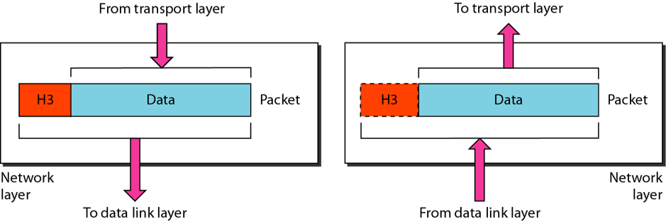
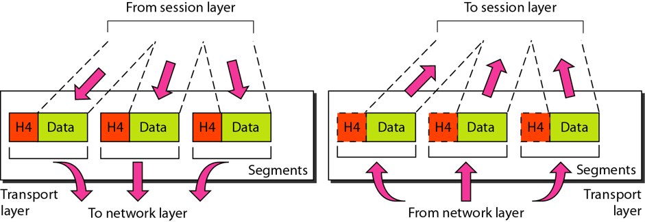
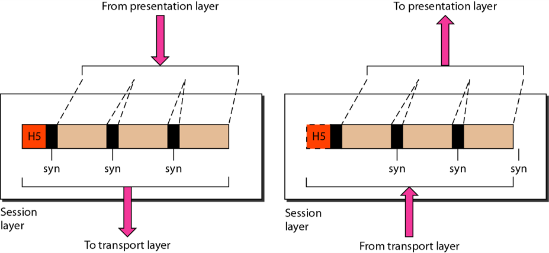
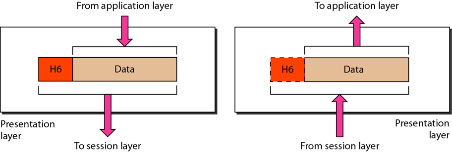
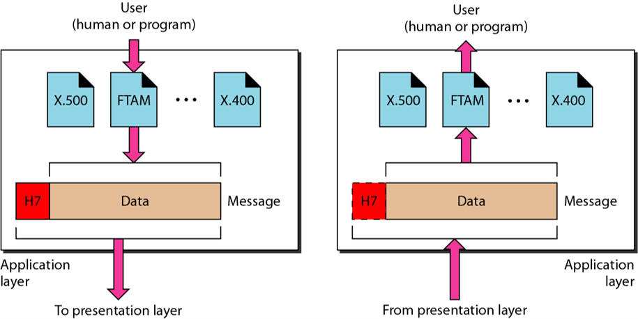
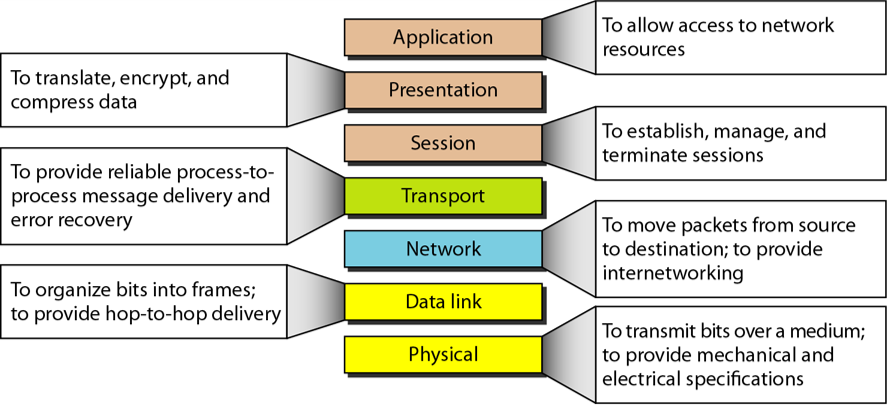
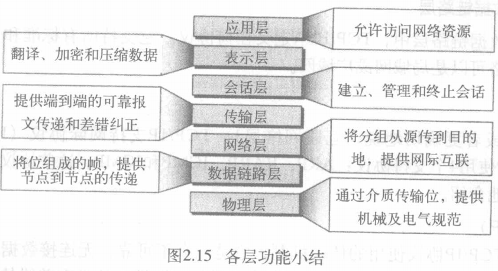
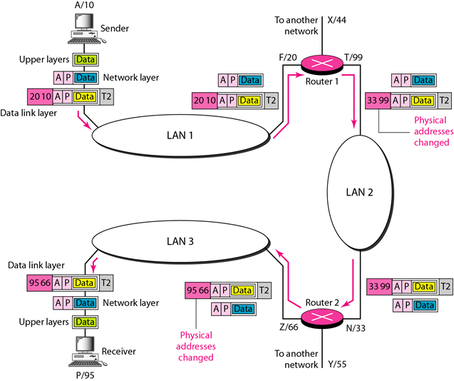

- 前面4层提供物理标准、网络 接口、网际互联和传输功能，它相应于OSI模型前的4层。
- OSI模型最上面的3层由TCP/IP一个 称为应用层（参看图2.16）的单一层来表示。
- 传输控制协议（TCP）
- 用户数据报协议（UDP）
- 流控制传输协议（SCTP）
地址解析协议（ARP）
逆地址解析协议（RARP）
因特网控制报文协议（ICMP）
因特网组报文协议（IGMP）

title: 计算机网络 第2章 网络模型
date: 2021-6-20 20:19:16
categories: 计算机网络
tags:
OSI模型提供了一个用来进行网络系统设计的层次化框架。它由7个相互独立但又有互相关联的层次组成，每一层都定义了通过网络传递信息的一部分功能。
使用 OSI 模型传输过程
成帧（定义帧的开始和结束）
物理寻址
流量控制
差错控制
访问控制（控制对信道的访问）
如果两个系统在不同的网络（链路）上并通过网络（链路）之间的设备连接，通常就需要网络层以完成源端到目 的端的传递。
网络层负责将各个分组（packet）从源地址传递到目的地址，可能会通过多个网络（链路）
网络层负责将各个分组从源地址传递到目的地址。
具体任务：
逻辑寻址
路由选择（最佳路径）
负责整个报文的进程到进程的传递，进程是主机上运行的应用程序。
尽管网络层监管各个分组的源端到目的端传递，但是它并不了解这些分组之间的相互关系。传输层确保整个报文无差错并按顺序地到达目的地，并在源到目的层次进行差错控制和流量控制。
传输层负责一个报文（message）从一个进程到另一个进程的传递。
具体任务：
服务点寻址
分段和组装
连接控制
流量控制
差错控制
对话控制
同步
翻译
加密
压缩
网络虚拟终端
文件传输、访问和管理
邮件服务
目录服务
小结：
 地址解析协议（ARP）
逆地址解析协议（RARP）
因特网控制报文协议（ICMP）
因特网组报文协议（IGMP）
因特网的逻辑地址现在流行的是32位地址（IPv4），它唯一定义了连接到因特网的一台主机。因特网上没有两台主机具有相同的IP地址。
跳到跳时物理地址将改变，但逻辑地址保持不变。
字母：逻辑地址
数字：物理地址(下图)
